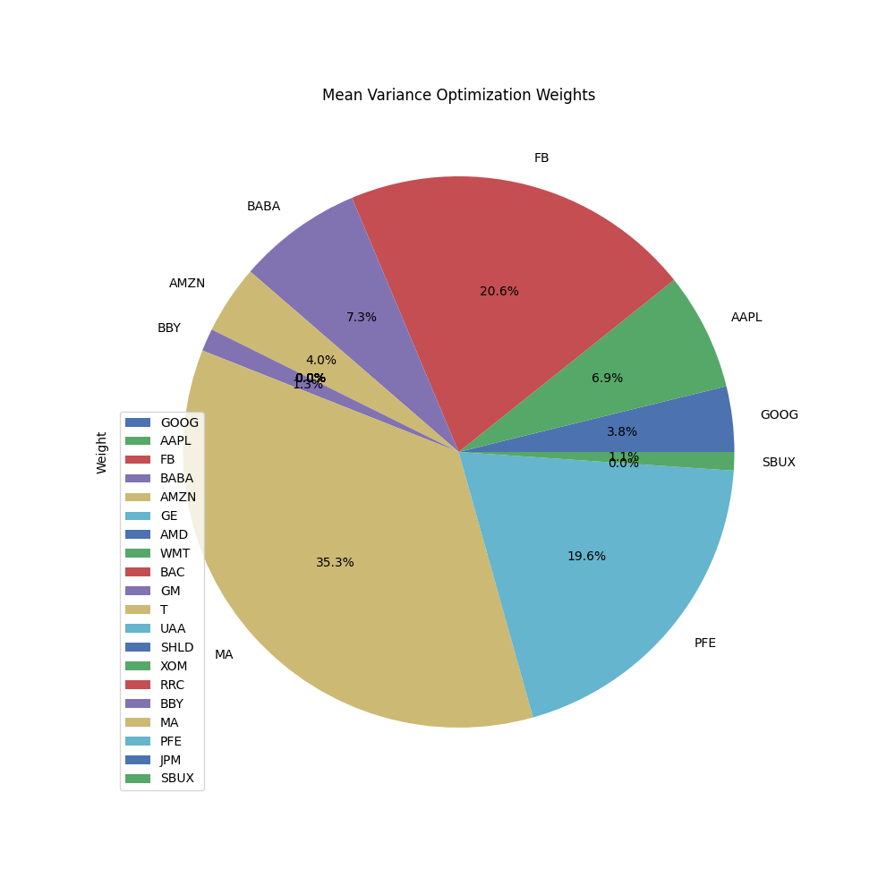
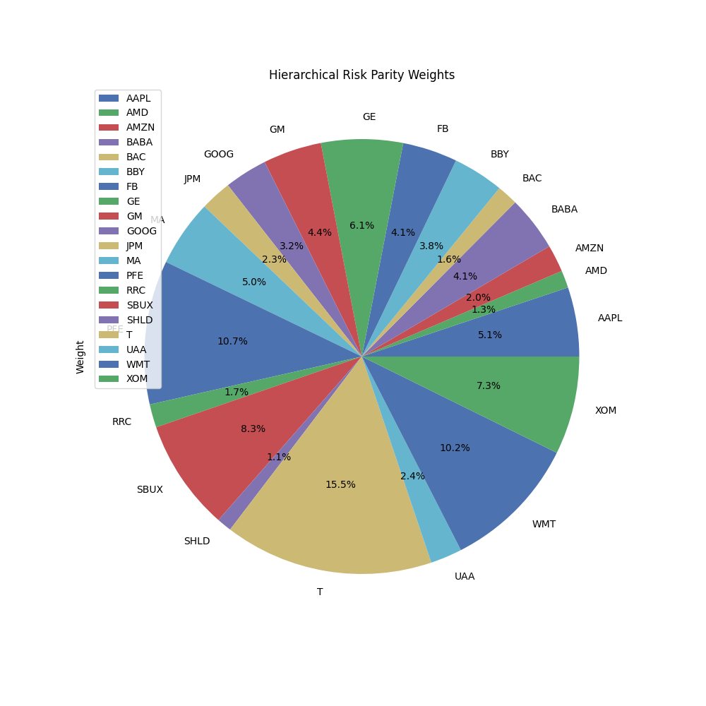
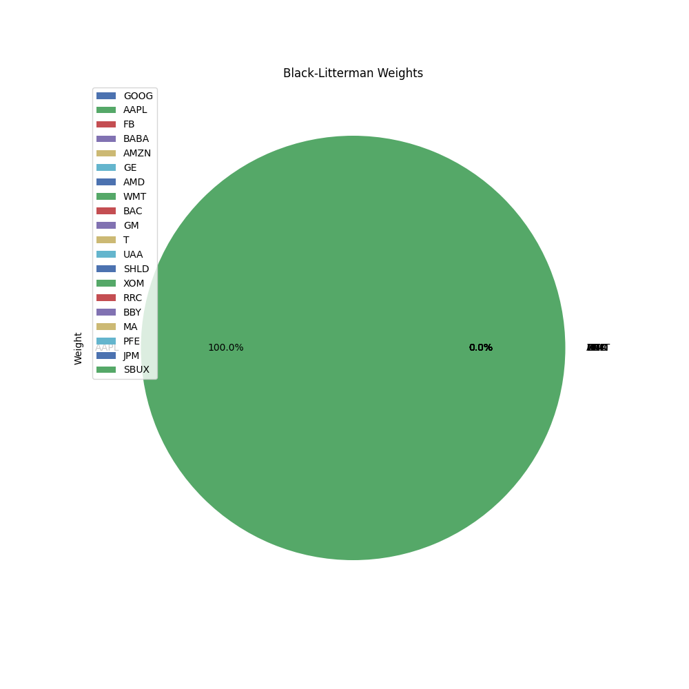
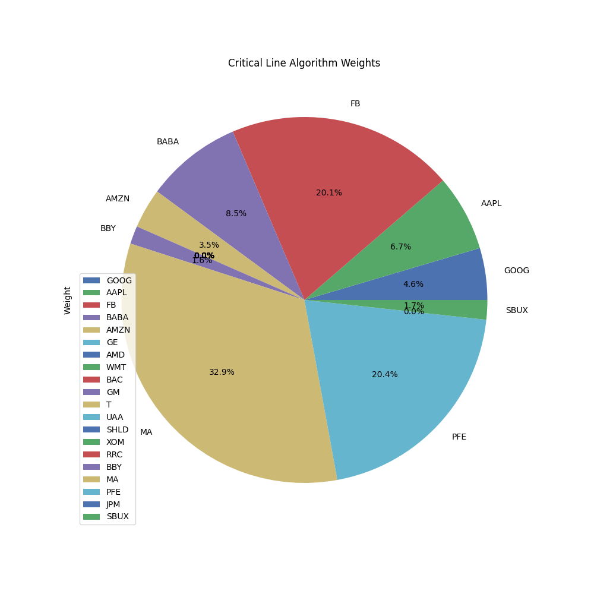

Mean Variance Optimization is an approach developed by Harry Markowitz, under which the objective is to minimize the portfolio variance and a given level of expected return. It's based on the idea that an investor should take on no more risk than that which is necessary to achieve their desired level of return. In the pie chart, each slice represents the proportion of the total funds that should be invested in a given stock to achieve the highest Sharpe ratio, i.e., the best risk-adjusted return.
| Ticker | Weight |
|---|---|
| GOOG | 0.038354 |
| AAPL | 0.068899 |
| FB | 0.206031 |
| BABA | 0.073146 |
| AMZN | 0.040329 |
| GE | 0.000000 |
| AMD | 0.000000 |
| WMT | 0.000000 |
| BAC | 0.000000 |
| GM | 0.000000 |
| T | 0.000000 |
| UAA | 0.000000 |
| SHLD | 0.000000 |
| XOM | 0.000000 |
| RRC | 0.000000 |
| BBY | 0.013235 |
| MA | 0.353487 |
| PFE | 0.195702 |
| JPM | 0.000000 |
| SBUX | 0.010816 |
Hierarchical Risk Parity (HRP) is a modern portfolio theory proposed by Marcos Lopez de Prado, which uses machine learning to construct portfolios. HRP does not require any parameter estimation, making it particularly suited to large datasets where parameter estimation is noisy. The pie chart displays the proportion of the total funds that should be invested in each stock according to the HRP model.
| Ticker | Weight |
|---|---|
| AAPL | 0.051410 |
| AMD | 0.012973 |
| AMZN | 0.020182 |
| BABA | 0.040846 |
| BAC | 0.015568 |
| BBY | 0.037752 |
| FB | 0.040758 |
| GE | 0.060722 |
| GM | 0.043542 |
| GOOG | 0.031825 |
| JPM | 0.023255 |
| MA | 0.049569 |
| PFE | 0.107003 |
| RRC | 0.017325 |
| SBUX | 0.082697 |
| SHLD | 0.010999 |
| T | 0.155331 |
| UAA | 0.023537 |
| WMT | 0.101710 |
| XOM | 0.072995 |
The Black-Litterman model is a mathematical model for portfolio allocation developed by Fischer Black and Robert Litterman. This model allows investors to combine their unique views regarding the performance of various assets with the market equilibrium in a manner that results in intuitive, diversified portfolios. The pie chart presents the proportion of the total funds that should be invested in each stock according to the Black-Litterman model.
| Ticker | Weight |
|---|---|
| GOOG | -1.628588e-16 |
| AAPL | 1.000000e+00 |
| FB | 2.191607e-17 |
| BABA | -1.012406e-17 |
| AMZN | -1.391638e-17 |
| GE | 1.144256e-16 |
| AMD | 4.264220e-17 |
| WMT | 7.799177e-17 |
| BAC | 4.332607e-17 |
| GM | -1.473775e-17 |
| T | -2.531353e-17 |
| UAA | 4.179604e-18 |
| SHLD | -1.508797e-17 |
| XOM | 3.734143e-17 |
| RRC | -1.500134e-17 |
| BBY | 2.690351e-17 |
| MA | -6.492230e-18 |
| PFE | -5.680259e-17 |
| JPM | -6.887086e-17 |
| SBUX | -5.235398e-17 |
The Critical Line Algorithm (CLA) is a method used in portfolio optimization, specifically in finding the optimal portfolio that lies along the efficient frontier. CLA is particularly useful when dealing with a large number of assets and constraints. The pie chart shows the proportion of the total funds that should be invested in each stock according to the CLA model.
| Ticker | Weight |
|---|---|
| GOOG | 4.580219e-02 |
| AAPL | 6.743220e-02 |
| FB | 2.008032e-01 |
| BABA | 8.494261e-02 |
| AMZN | 3.525209e-02 |
| GE | 0.000000e+00 |
| AMD | 0.000000e+00 |
| WMT | -2.932778e-17 |
| BAC | 0.000000e+00 |
| GM | 0.000000e+00 |
| T | 0.000000e+00 |
| UAA | 0.000000e+00 |
| SHLD | 0.000000e+00 |
| XOM | 0.000000e+00 |
| RRC | 0.000000e+00 |
| BBY | 1.586695e-02 |
| MA | 3.287015e-01 |
| PFE | 2.039379e-01 |
| JPM | 0.000000e+00 |
| SBUX | 1.726125e-02 |